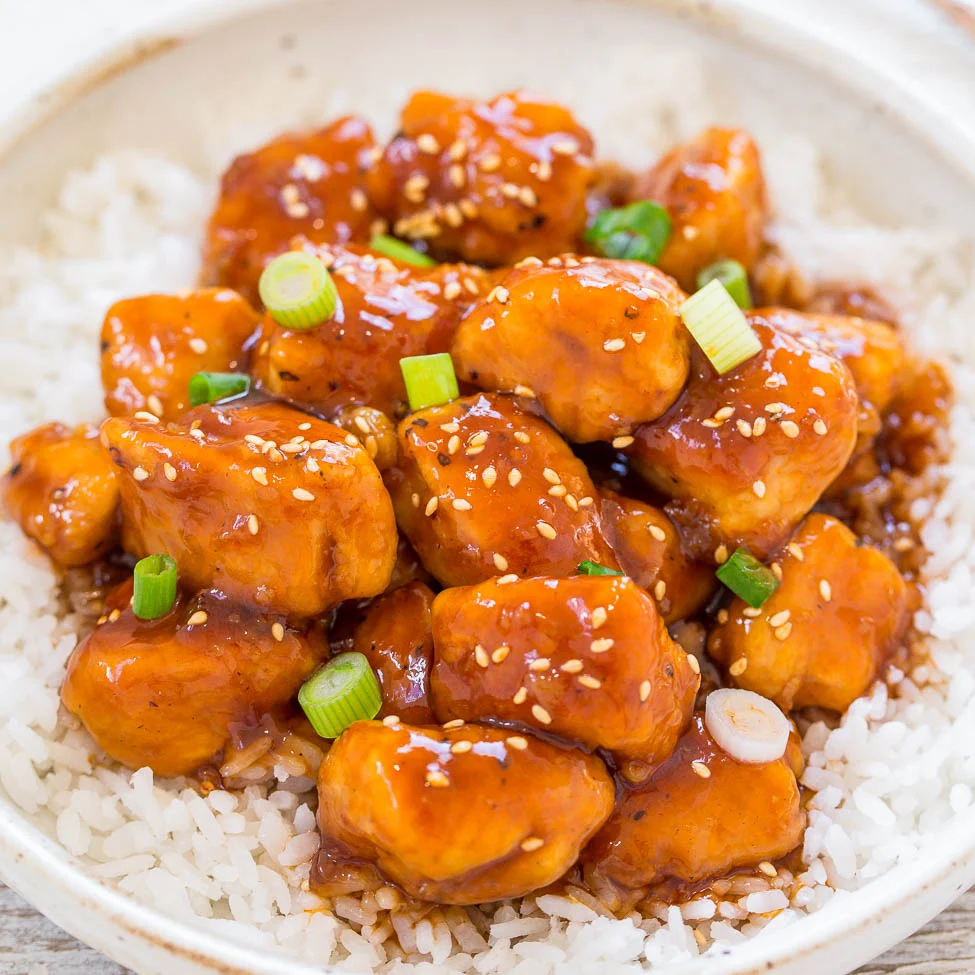

Our Menu
Main Courses
Pastrami Sandwich - Steamed pastrami tossed with fried onions and topped with our
in-house sauce. Served on your choice of Baguette, Sourdough, or Rye. More details

Sino Steak Sandwich - A hearty sandwich filled with tender strips of steak and
coleslaw. More details

General Tso's Chicken - Sweet and spicy chicken served with steamed broccoli and
rice. More details

Beef and Broccoli - Tender beef stir-fried with fresh broccoli in a savory sauce. More details
Szechuan Chicken - Spicy chicken stir-fried with vegetables and Szechuan sauce. More details

Vegetable Lo Mein - Stir-fried noodles with a mix of fresh vegetables. More details

Sweet and Sour Chicken - Crispy pieces of chicken in a sweet and tangy sauce, served
with pineapple and peppers. More details

Sesame Chicken - Tender pieces of chicken tossed in our Secret Award-Winning Sauce
topped with sesame seeds! More details